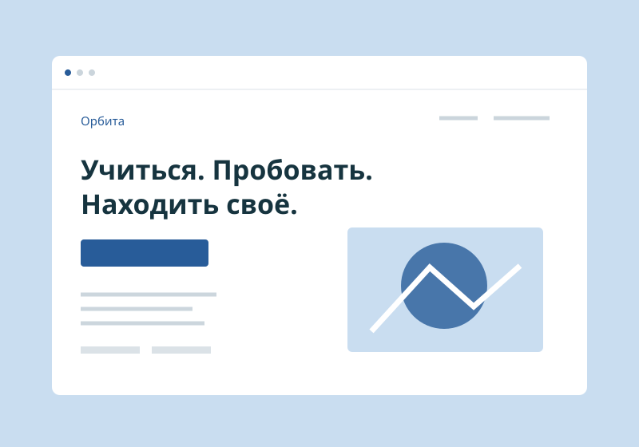
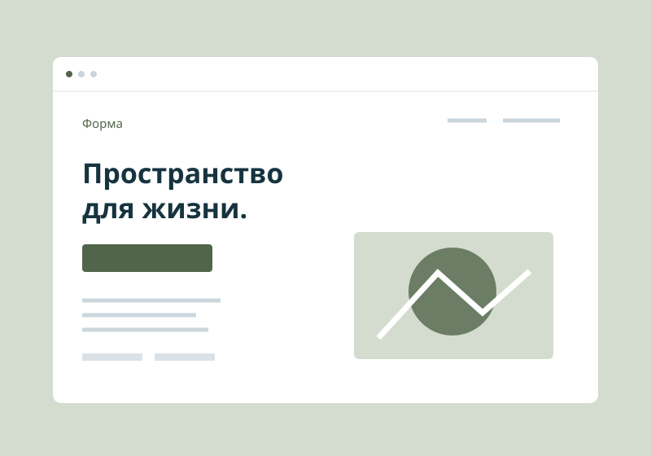
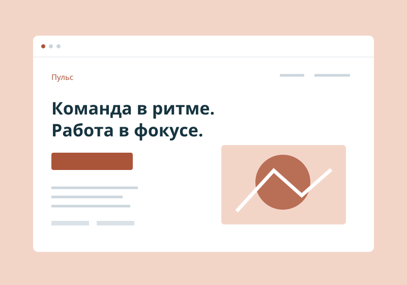

Сайты для бизнеса
Рассказываем о компании, выстраиваем путь пользователя и превращаем интерес в обращение.
Корпоративные сайты · Лендинги
IT-студия для бизнеса и новых идей
Проектируем и создаём сайты, которые помогают людям понять ваш продукт и выбрать вас.

От первой идеи до запускаРассказываем о компании, выстраиваем путь пользователя и превращаем интерес в обращение.
Корпоративные сайты · Лендинги
Делаем сложные процессы понятными: от личного кабинета до рабочего инструмента команды.
Веб-приложения · Интерфейсы
Помогаем сайту работать после запуска: обновляем, проверяем и добавляем полезные возможности.
Поддержка · Оптимизация
Избранные концепты
Образовательная платформа

Сайт архитектурной студии

Рабочее пространство команды
Показано проектов: 3
Как мы работаем
Вы понимаете, что происходит на каждом этапе. Мы задаём вопросы, показываем решения и остаёмся на связи.
Обсуждаем цели, аудиторию и то, как измерить результат.
Собираем структуру, прототип и визуальное направление.
Разрабатываем, тестируем и передаём понятные инструкции.
Расскажите, что хотите изменить. Вместе найдём первый шаг.